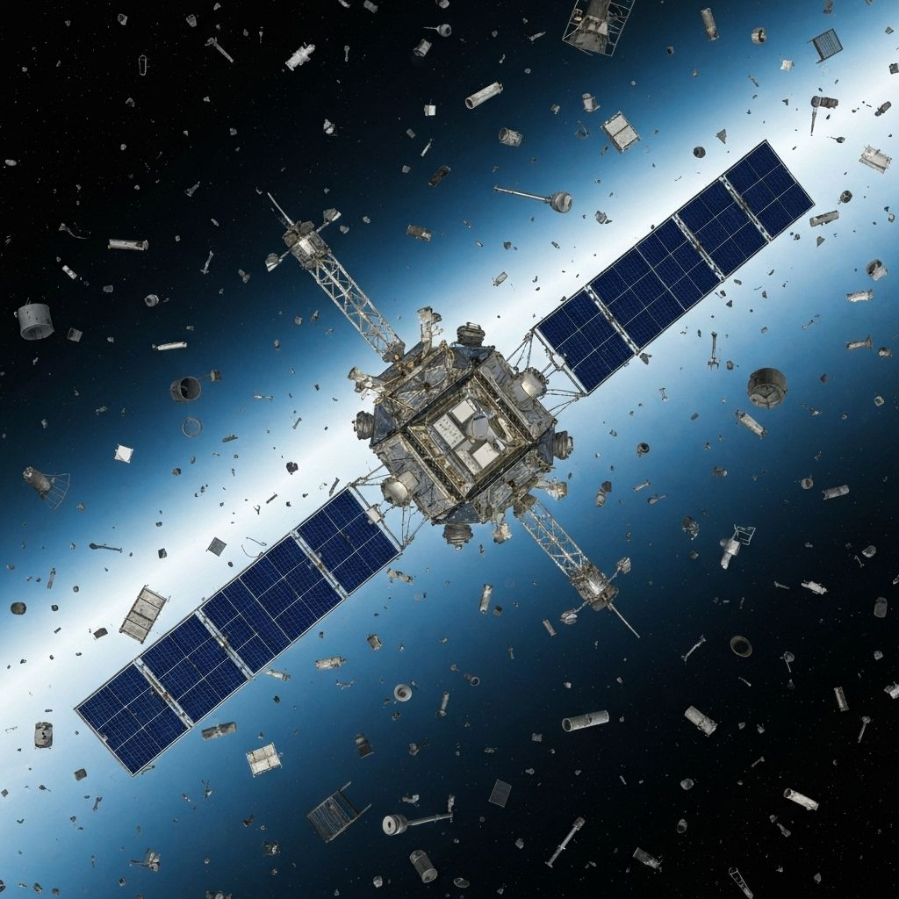

Real-time space debris monitoring system using radar and optical sensors
Developed an advanced space debris tracking system capable of monitoring over 34,000 objects in Earth's orbit in real-time. The system combines radar and optical sensor data to provide accurate trajectory predictions and collision warnings for active satellites.
This critical infrastructure helps protect billions of dollars in space assets and ensures the safety of crewed missions by providing early warning of potential collisions with space debris ranging from defunct satellites to paint flecks.
Integrated ground-based radar systems with optical telescopes to achieve comprehensive coverage and improved tracking accuracy for objects as small as 1cm.
Implemented sophisticated orbital propagation algorithms accounting for atmospheric drag, solar radiation pressure, and gravitational perturbations for precise predictions.
Developed high-performance computing pipeline capable of processing terabytes of sensor data daily and updating orbital elements in near real-time.